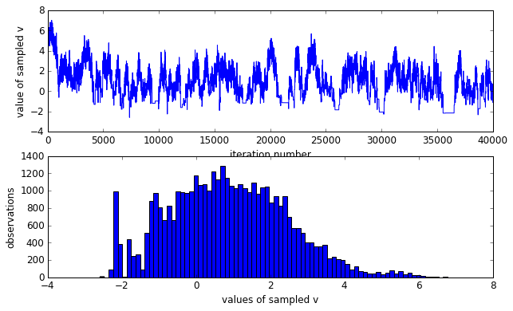

Markov Chain Monte Carlo
After learned variational inference and latent dirichlet allocation (LDA), I wrote a paper about Gaussian relational topic model to solve the problem of connection discovery using shared images [to be announced]. In order to continue solving more challenging problems and improving myself, I find it necessary to master Markov Chain Monte Carlo methods. Therefore, I put my hands on Gibbs sampling and Metropolis Hastings algorithm.
Metroplis Hastings and Slice Sampling
As an experiment of Metroplis Hastings algorithm, I find this link useful. It also compares Metropolis Hastings with slice sampling, both are worth investigating. Following experiments are based on the post.
Anyway, first let’s describe the model we are going to MCMC with. It’s a two level hierachical model:
The joint distribution is obviously given by
The class defining the distribution for sampling and probability density evaluation is given:
from __future__ import division
import numpy as np
import scipy.stats as ss
class joint_dist(object):
def rvs(self, n=1):
""" sample a random variable from this distribution """
sample = np.zeros((10, n))
for i in xrange(n):
# generate rvs
v = ss.norm(0, 3).rvs()
xs = ss.norm(0, np.sqrt(np.e**v)).rvs(9)
# place in sample array
sample[0, i] = v
sample[1:, i] = xs
return sample
def pdf(self, sample):
""" get the probability of a specific sample """
v = sample[0]
pv = ss.norm(0, 3).pdf(v)
xs = sample[1:]
pxs = [ss.norm(0, np.sqrt(np.e**v)).pdf(x_k) for x_k in xs]
return np.array([pv] + pxs)
def loglike(self, sample):
""" log likelihood of a specific sample """
return np.sum(np.log(self.pdf(sample)))
The current state is defined as $w=[v,x_1,x_2,…,x_9]$. And the proposal funciton is defined as symmetric normal distribution with the current state as mean:
The Metropolis-Hasting function is defined:
def metropolis(init, iters):
"""
based on http://www.cs.toronto.edu/~asamir/cifar/rpa-tutorial.pdf
can take several minutes to run with large sample sizes.
"""
dist = joint_dist()
# set up empty sample holder
D = len(init)
samples = np.zeros((D, iters))
# initialize state and log-likelihood
state = init.copy()
Lp_state = dist.loglike(state)
accepts = 0
for i in np.arange(0, iters):
# propose a new state
prop = np.random.multivariate_normal(state.ravel(), np.eye(10)).reshape(D, 1)
Lp_prop = dist.loglike(prop)
rand = np.random.rand()
if np.log(rand) < (Lp_prop - Lp_state):
accepts += 1
state = prop.copy()
Lp_state = Lp_prop
samples[:, i] = state.copy().ravel()
if i % 1000 == 0: print('[#iter: %d]' %i)
print 'Acceptance ratio', accepts/iters
return samples
Let’s start by taking 50,000 samples using Metropolis-Hastings.
# define our starting point
w_0 = np.array([0., 1., 1., 1., 1., 1., 1., 1., 1., 1.])
# actually do the sampling
n = 50000
samples = metropolis(w_0, n)
Acceptance ratio 0.24342
import matplotlib.pyplot as plt
%matplotlib inline
from matplotlib import rcParams
rcParams['font.size'] = 12
rcParams['figure.figsize'] = (10, 6)
burnin = 10000
m = n-burnin
v = samples[0, burnin:]
fig = plt.figure()
ax0 = fig.add_subplot(211)
#fig, (ax0, ax1) = plt.subplots(2, 1)
# show values of sampled v by iteration
ax0.plot(np.arange(m), v)
ax0.set_xlabel('iteration number')
ax0.set_ylabel('value of sampled v')
ax1 = fig.add_subplot(212)
# plot a histogram of values of v
ax1.hist(v, bins=80)
ax1.set_xlabel('values of sampled v')
ax1.set_ylabel('observations')
plt.show()

As it should be noticed that the sampled $v$ is not Gaussian distributed, rather skewed. However, we know that $v$ is in fact zero-mean gaussian distributed. The skewed sampling is not good to estimate the true distribution of $v$. As discussed in the original post, it is because under the directed regime — any small or negative $v$ implies that every $x_k∼\mathcal{N}(0,e^v \approx 0)$, thus imposing a huge probability “penalty” on any non-zero $x_k$. Meanwhile, our Metropolis-Hastings is naively proposing a vector of $x_k$s which are probably not all zero, so we tend to reject any small or negative $v$.
So for slice sampling:
def slice_sample(init, iters, sigma, step_out=True):
"""
based on http://homepages.inf.ed.ac.uk/imurray2/teaching/09mlss/
sigma is the step size of each coordinate
"""
dist = joint_dist()
# set up empty sample holder
D = len(init)
samples = np.zeros((D, iters))
# initialize
xx = init.copy()
for i in xrange(iters):
perm = range(D)
np.random.shuffle(perm)
last_llh = dist.loglike(xx)
# Sweep through axes (simplest thing)
for d in perm:
# u|x ~ [0,1]*p(x)
llh0 = last_llh + np.log(np.random.rand())
# Create a horizontal interval (x_l, x_r) enclosing xx
rr = np.random.rand(1)
x_l = xx.copy()
x_l[d] = x_l[d] - rr * sigma[d]
x_r = xx.copy()
x_r[d] = x_r[d] + (1 - rr) * sigma[d]
# step out p(x)>u'
if step_out:
llh_l = dist.loglike(x_l)
while llh_l > llh0:
x_l[d] = x_l[d] - sigma[d]
llh_l = dist.loglike(x_l)
llh_r = dist.loglike(x_r)
while llh_r > llh0:
x_r[d] = x_r[d] + sigma[d]
llh_r = dist.loglike(x_r)
x_cur = xx.copy()
while True:
xd = np.random.rand() * (x_r[d] - x_l[d]) + x_l[d]
x_cur[d] = xd.copy()
last_llh = dist.loglike(x_cur)
if last_llh > llh0: #this is the only way to leave the while loop, satiesfy p(x)>u'
xx[d] = xd.copy()
break
elif xd > xx[d]:
x_r[d] = xd
elif xd < xx[d]:
x_l[d] = xd
else:
raise RuntimeError('Slice sampler shrank too far.')
if i % 1000 == 0: print 'iteration', i
samples[:, i] = xx.copy().ravel()
return samples
# define our starting point
w_0 = np.array([0., 1., 1., 1., 1., 1., 1., 1., 1., 1.])
# actually do the sampling
n = 10000
sigma = np.ones(10)
samples = slice_sample(w_0, iters=n, sigma=sigma)
burnin = 0
m = n-burnin
v = samples[0, burnin:]
fig = plt.figure()
ax0 = fig.add_subplot(211)
#fig, (ax0, ax1) = plt.subplots(2, 1)
# show values of sampled v by iteration
ax0.plot(np.arange(m), v)
ax0.set_xlabel('iteration number')
ax0.set_ylabel('value of sampled v')
ax1 = fig.add_subplot(212)
# plot a histogram of values of v
ax1.hist(v, bins=80)
ax1.set_xlabel('values of sampled v')
ax1.set_ylabel('observations')
plt.show()